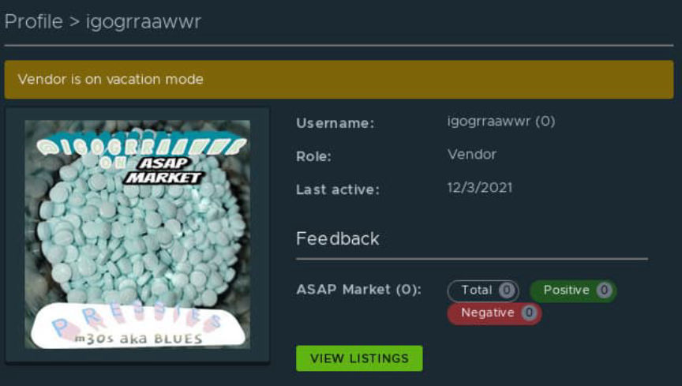
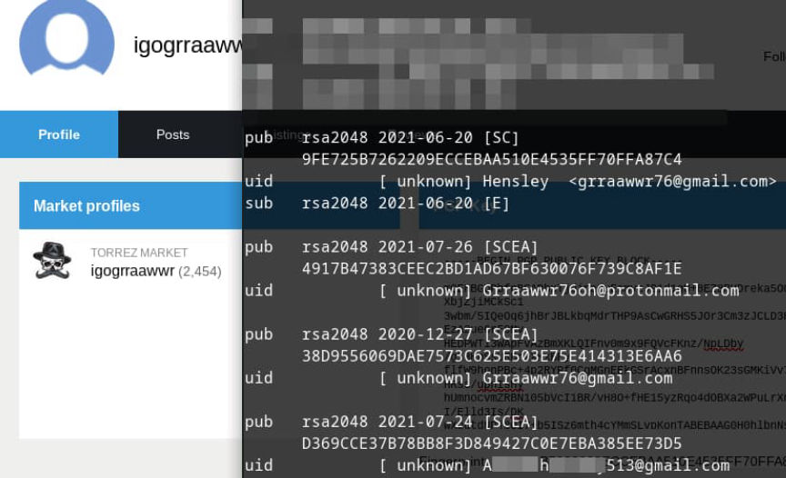
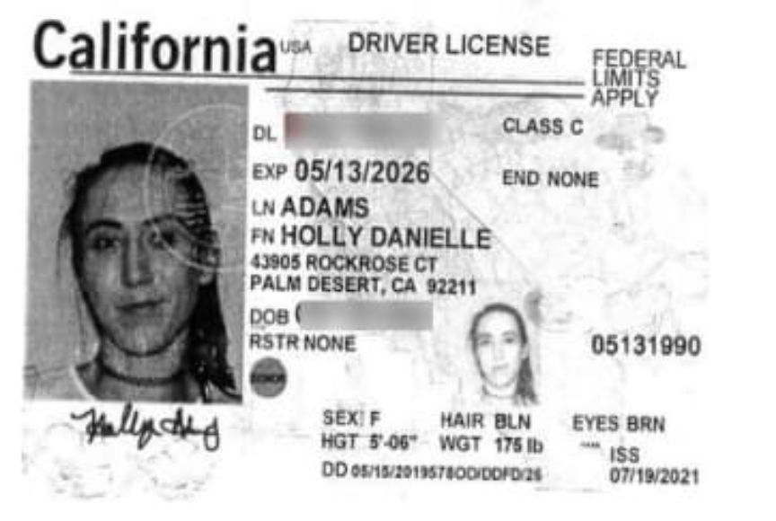
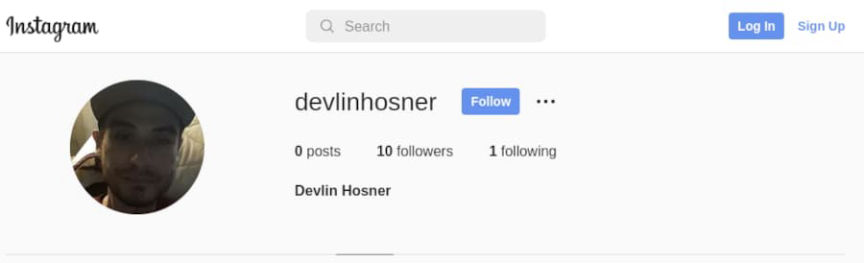
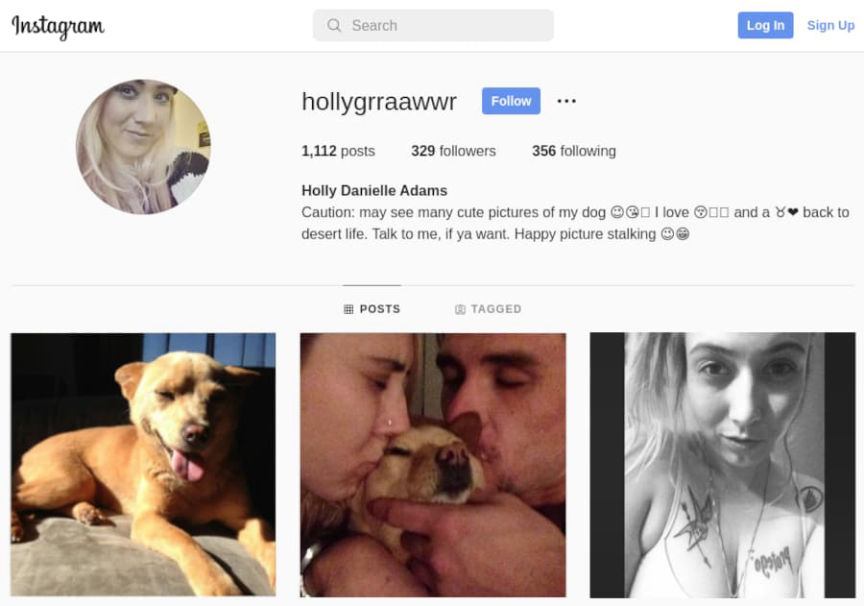
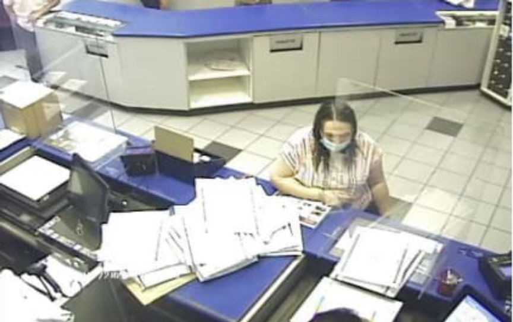
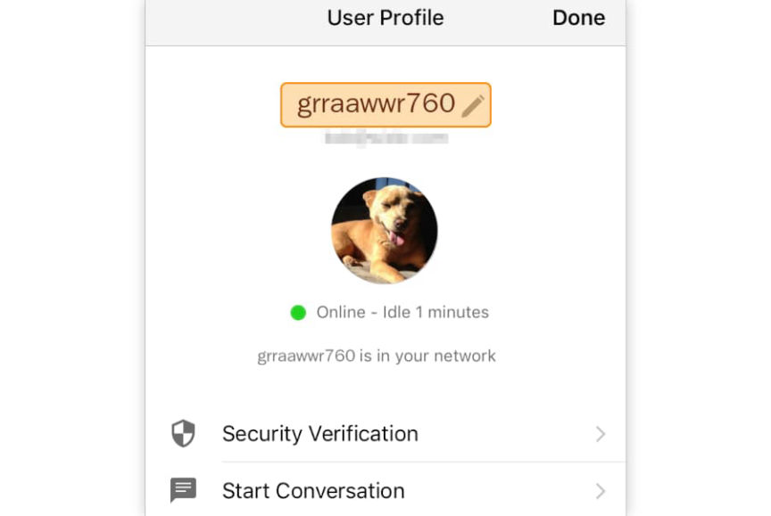
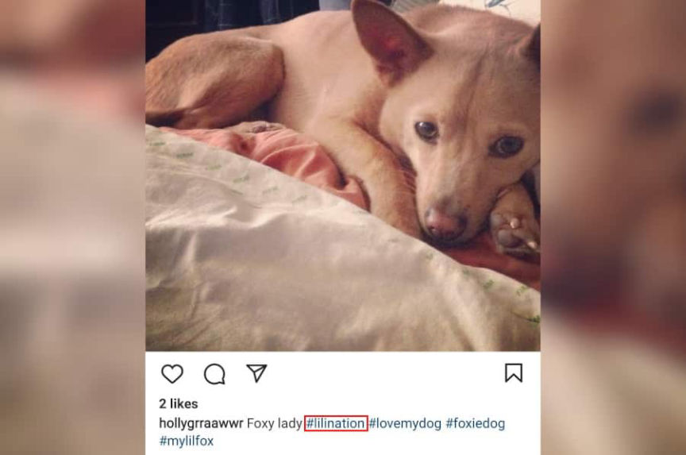
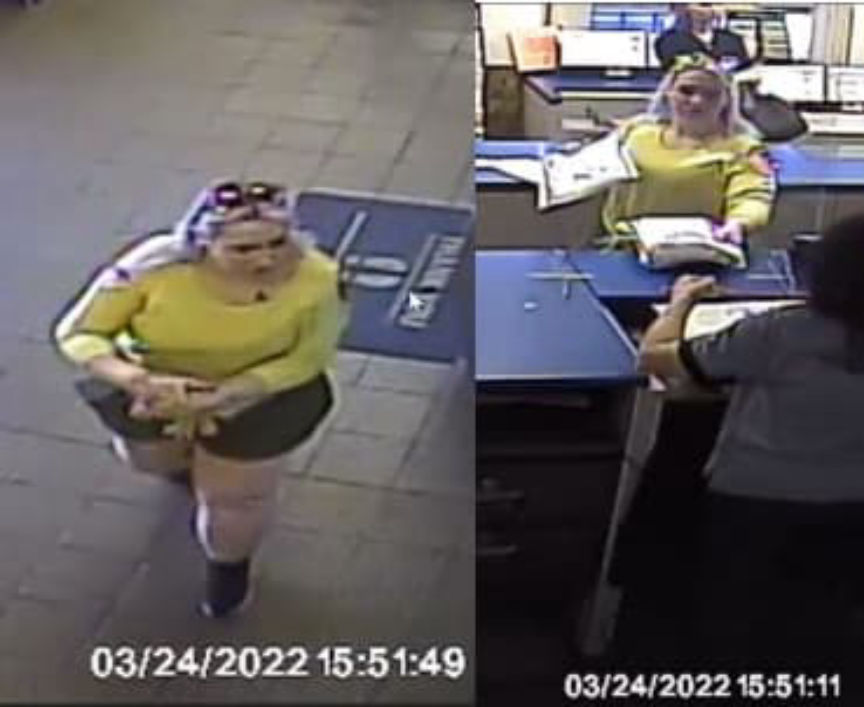
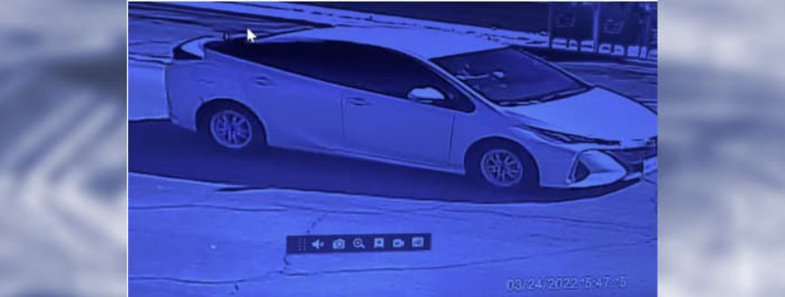

Worst OPSEC: Counterfeit Oxy Vendor igogrraawwr
Adams also operated accounts on the regular internet with the same or similar usernames, including on Instagram and a pornographic site. Adams’ case provides many examples of OPSEC failures, including the one where you send an undercover law enforcement officer the account number, routing number, and real name associated with your bank account. She also sent the same undercover LEO a pictures of counterfeit oxycodone pills in her hand.
Per the criminal complaint, which is linked at the bottom of the page, the duo sold pressed oxycodone pills with fentanyl as the active ingredient:
“Near the end of the investigation, an online identity linked to Hosner and Adams told an<br>undercover law enforcement agent that the pills sold to undercover agents contained fentanyl.<br>And while law enforcement has not yet tested every pill purchased during this investigation, all<br>the pills that law enforcement has tested to date contained fentanyl.”
In at least one case, the pills also tested positive for acetaminophen.
Summary
IRS-CI Special Agent Christopher Fitzpatrick provided a QRD in court documents which should bring people up to speed.
“Since at least in or around May 2021, law enforcement agents have been investigating Hosner and Adams for running an illegal narcotics distribution operation on various encrypted websites on the dark web. During this investigation, law enforcement officers conducted multiple undercover purchases of counterfeit oxycodone pills from Hosner and Adams. Near the end of the investigation, an online identity linked to Hosner and Adams told an undercover law enforcement agent that the pills sold to undercover agents contained fentanyl. And while law enforcement has not yet tested every pill purchased during this investigation, all the pills that law enforcement has tested to date contained fentanyl.”
“Based on the above facts and on the similarity of the pills that tested positive for fentanyl to the other pills purchased and seized by undercover law enforcement agents during this investigation, agents believe that all of the tens of thousands of pills currently in law enforcement’s possession as a result of this investigation contain fentanyl.”
“During the investigation, agents also observed Adams place a parcel containing illegal narcotics into the mail using a facility maintained by the United States Postal Service. Additionally, agents traced monies used in undercover narcotics purchases to financial accounts controlled by Hosner, and agents also reviewed structured cash withdrawals made by Hosner that appear designed to evade financial reporting requirements imposed by federal law.”
“In March 2022, agents executed a search warrant at a hotel where Hosner and Adams were residing. Inside this hotel room, agents seized approximately 10,000 counterfeit oxycodone pills suspected to contain fentanyl, as well as suspected methamphetamine, intravenous needles, and packaging materials.”
Undercover purchases
Federal law enforcement agencies started investigating the ToRReZ Market vendor “igogrraawwr” in May 2021. Between May 2021 and March 2022, law enforcement officers conducted at least 12 undercover purchases from Hosner and Adams through darkweb marketplaces and through Wickr.

ASAP is one of the few remaining markets used by “igogrraawwr”
“On or around May 2, 2021, a member of the NCIDE Task Force, operating in an undercover capacity, purchased 200 counterfeit oxycodone pills from “igogrraawwr” for $1,000.00, plus $15.00 for shipping, for a total of $1,015.00, using Bitcoin. On or around May 4, 2021, “igogrraawwr” mailed the undercover purchase via United Parcel Service (“UPS”) from the Palm Springs, California, area. On May 6, 2021, the parcel was delivered to an address controlled by law enforcement in the Eastern District of California.
“On May 7, 2021, law enforcement opened the parcel. Inside the parcel were twenty-two grams (including the weight of packaging) of counterfeit pressed oxycodone pills secreted in a “Home Collection” satin pillowcase that appeared to be in its original packaging.”
The undercover purchases were unremarkable for the most part. Although some of the purchases occurred on different platforms and investigators used different payment methods, none are materially different from the example above.
According to the criminal complaint, the sender of the first package purported to be someone with the initials “D.R.” with the phone number “760-777-2839.” Investigators found a USPS account registered with the same phone number that purportedly belonged to an individual with the initials “A.H.” in La Quinta, California.
Investigators then searched Thomson Reuters CLEAR for information about A.H. The individual’s most recent address, according to CLEAR, was an address in Indio, California. A subsequent search of CLEAR, using the Indio, California, address, revealed that both Adams and Hosner were associated with the address. USPS records revealed that Adams and Hosner had received packages at the Indio address in 2021.

You have to wonder if there is more happening here with the A.H. identity.
Although investigators know who A.H. is, they do not identify the individual in the criminal complaint because they believe A.H. could be “a victim of identity theft whose identity was used by Hosner and Adams to conceal their involvement in the dark web narcotics scheme.” Unfortunately for A.H., one of the igogrraawwr PGP keys includes the full name of an individual with those initials and the numbers “513” in the form of a Gmail address.OSINT
igogrraawwr’s PGP key on ToRReZ Market includes the email address “[email protected].” In the criminal complaint, the first piece of information connecting the vendor profile to Adams is the existence of “a user account on the adult website manyvids.com with the username “grraawwr76” and a profile image depicting Adams.”

To the credit of the suspect, it does not appear that she used the account.
Investigators matched the profile picture on the pornographic website with Adams’ driver’s license photograph.
<picture><source srcset="https://darknetlive.com/post/worst-opsec-counterfeit-oxy-vendor-igogrraawwr/avif/dl.avif" type="image/avif"><source srcset="https://darknetlive.com/post/worst-opsec-counterfeit-oxy-vendor-igogrraawwr/webp/dl.webp" type="image/webp"></picture>
Investigators claimed to match the porno picture with the CA DMV picture.
A search of social media platforms for information related to Hosner led investigators to an Instagram account under the username “devlinhosner.”

Hosner also used Instagram under @dhosner89.
The devlinhosner followed only one account, an account with the username “hollygrraawwr.” Images posted on the hollygrraawwr Instagram account included the profile picture Adams had used on the pornographic website and pictures of Adams and Hosner together, indicating to investigators that they were romantically involved.

These pictures, although not in this order, are among those examined by investigators.
Adams had also posted pictures of a dog on her Instagram account. Investigators recognized the dog from pictures uploaded to the igogrraawwr profile on ToRReZ Market. On Instagram, Adams had posted a picture of the dog with the hashtag “lilination.”A shipping service
Investigators obtained records for a JPMorgan Chase Bank account that Hosner had opened in 2020. The records indicated that between June 5, 2021, and August 5, 2021, Hosner’s account made 80 payments to “Shipping Company 1” totaling approximately $8,600.
After obtaining records from the undisclosed shipping company, investigators learned that an account with the A**H**[email protected] email address had shipped approximately 1,150 packages between May 10, 2021, and September 8, 2021.

By the third undercover purchase, feds had Adams on camera.
Additionally, the account associated with the 513 Gmail address had paid for the postage for four of law enforcement’s undercover purchases from hollygrraawwr.Coinbase
The records from JPMorgan Chase also revealed that Hosner had a Coinbase account. Coinbase provided investigators with the records associated with Hosner’s account from April 29, 2021, through August 15, 2021. In that time period, Hosner had converted more than $800,000 worth of Bitcoin to U.S. dollars.
The criminal complaint suggests that investigators have only linked part of that amount to the suspected drug trafficking operation.
“An FBI analyst reviewed Hosner’s Coinbase account for evidence of illegal activity. Using a proprietary blockchain investigative tool, the analyst traced 1.7902 Bitcoin, which totaled $71,213.02 out of the approximately $800,000 worth of Bitcoin that was deposited into Hosner’s Coinbase account during the investigative time period. The FBI analyst concluded that the Bitcoin deposits into Hosner’s Coinbase account originated from the ToRReZ and World Market marketplaces.”
“Both of these marketplaces are located on the dark web and only exist to sell illegal narcotics and other contraband. Furthermore, during the investigation, agents routinely observed “igogrraawwr” ’s vendor account on ToRReZ. At no time did “igogrraawwr” offer to sell anything that was not contraband.”
“The FBI analysis revealed that the traced Bitcoin (1.7902 Bitcoin, totaling $71,213.02) was a one-hop transaction from one cryptocurrency wallet address associated to a dark web marketplace to a different cryptocurrency wallet address belonging to Hosner.”
Wickr
On unrelated charges, local law enforcement arrested Adams and Hosner on September 8, 2021. Both suspects were subsequently released.
After the release, an undercover member of the Northern California Illicit Digital Economy (NCIDE) task force ([em]sigh[/em]) contacted igogrraawwr through the encrypted messaging application Wickr. In their market profiles, the vendor listed the Wickr account “grraawwr760” as a place for direct deals.

The username is clearly a variation of the vendor username + their area code.
The vendor account on ASAP Market includes a description that was apparently copied from ToRReZ.
“…I only have PRESSED m30s aka bluesss aka dirty 30s aka (whatever it is you call them) and these PRESSED pills are STRONG AS FUCK. So anyone who is NOT opiate tolerant then I DONT recommend these, I don’t want to hear that someone didn’t know what to do or how to do it and something bad happens. So with that being said if you have ANY QUESTIONS, (just make sure you’re not wasting my time tho) then by all means hmu by way of wickr grraawwr760.”<details id="the-unusually-lengthy-marketplace-description-for-igogrraawwr"><summary class="u__s a2w">The unusually lengthy marketplace description for igogrraawwr</summary><div class="a2x">
Hey everyone, it’s me, igogrraawwr!! Yes its me, the real deal, your favorite vendor for THE BEST, TOP QUALITY PRODUCTS, and THE BEST CUSTOMER SERVICE, started on Torrez, then world and NOW here, @ Dark0de!!
So if you know My name then you know what I am about but for anyone that’s new, and doesn’t recognize my name (IGOGRRAAWWR)
Then this is for you, I only have PRESSED m30s aka bluesss aka dirty 30s aka (whatever it is you call them) and these PRESSED pills are STRONG AS FUCK. So anyone who is NOT opiate tolerant then I DONT recommend these, I don’t want to hear that someone didn’t know what to do or how to do it and something bad happens. So with that being said if you have ANY QUESTIONS, (just make sure you’re not wasting my time tho) then by all means hmu by way of wickr grraawwr760
I am bad at reading msgs on here that aren’t just the order msgs, I will always read order msgs because I have to fulfill orders.
Also you will begin to notice that I am not your typical vendor and if you read my feedback on torrez and world, you will see that I’m not lying about that. I will communicate with you consistently, I will try to get you ur tracking info asap but I’m only human so if you want it/NEED it then msg me on wickr and I can get that to u 10x faster. And my reasoning for giving u my wickr info to contact me is to make sure I can be able to communicate with you and fast, I will never ask you to do direct deals with me I don’t mind only using marketplaces. Also my shipping speeds are all true, I WILL OVERNIGHT IT and you will receive it the next day, not 3 days or 7 days or 2 weeks. But with that being said YOU MUST CHOOSE THE CORRECT SHIPPING SPEED, and PAY the amount for the overnight shipping. I use all shipping companies, fedex, ups AND usps. So that’s about all I can think of but if you need more than what I just wrote then again CHECK OUT my FEEDBACK on torrez market AND world market. Thanks!!
Looking forward to bringing great service here!!</details>
Some of the vendor’s Wickr messages were very descriptive.
“Do u snort or smoke them? (They’re good for either way) if u snort them, my ppl who also snort tell me these are great because 1 potency and 2 they break down easier, like not so hard to crush. Lol If u smoke them then they have the super popcorn taste and when smoked on foil give the golden trails.”
The undercover agent asked the vendor for a picture of one of the products the vendor advertised. “On or about December 11, 2021, “grraawwr760” sent a photograph of pills held in an open hand. “grraawwr760” also provided a Bitcoin address for payment. The undercover agent did not finalize a purchase at the time.”
On January 29, 2022, grraawwr760 sent the undercover agent a message through Wickr with a link to the Dark0de marketplace profile of a vendor with the username “its4real.” The message included the text, “[em]this may or may not be me hehe.[/em]”
Law enforcement officers maintained contact with the vendor through Wickr from January 2022 until the recent bust. They placed orders through Wickr and purchased counterfeit oxycodone pills from its4real on Dark0de. In one undercover purchase on February 8, 2022, a member of the NCIDE Task Force purchased 150 pressed m30 pills from its4real for $875.00, plus $30.00 for express shipping.
After placing the order on Dark0de, the undercover agent messaged grraawwr760 through Wickr, alerting the vendor that they had another order. On February 11, 2022, the undercover agent messaged the vendor through Wickr, asking for an update on the package. The vendor replied that they had dropped the package off at the post office and provided the agent with a tracking number. After receiving the package, the agent complimented the decoys the vendor had used to conceal the fake oxycodone pills (the package contained miscellaneous items, including a notebook, a headband, socks, and a tie-dye kit).
The undercover agent also commented on grraawwr760’s Wickr profile picture. According to the criminal complaint, the vendor’s profile picture was a photograph of the same dog visible in Adams’ Instagram pictures and igogrraawwr’s vendor profile on ToRReZ Market.

“Nice dog, what is your mother's maiden name and SSN?”
Grraawwr760 replied, “she’s a chow chow chihuahua I got her doggy DNA done lol.” The dog’s name, Grraawwr760 said, was “Lili (Lee lee).”<Cash App
Dark0de exit scammed in February after law enforcement officers had conducted another undercover purchase. Feds were unable to finalize the transaction before the exit scam. The undercover agent sent grraawwr760 a message on Wickr, offering to send a payment via Venmo to compensate for the funds stolen by Dark0de.
Grraawwr760 told the agent that they did not have a Venmo account. Instead, the vendor sent the agent their Cash App username, $tpeargin.
After grraawwr760 provided the agent with the Cash App username, an undercover agent viewed the Cash App profile and observed that the name associated with the account was an individual with the initials “T.P.” A query of law enforcement databases revealed that PayPal had previously identified “T.P.,” Adams, Hosner, and two other people as the potential operators of an identity theft ring.
According to PayPal records, Hosner had purchased at least two fully encrypted cellular telephones from sinilab.com and kryptall.com. Adams purchased blank checks, a chip blank smart card, and a clothing security tag remover from sellers on eBay.com.Prius Surveillance
On March 23, 2022, undercover agents purchased 400 counterfeit oxycodone pills from grraawwr760 on Wickr. On March 24, the vendor mailed the package from a post office in Palm Desert, California.

Surveillance footage from the post office showed Adams dropping off the package.
Exterior surveillance cameras near the Palm Desert post office also captured a white Toyota Prius arriving at the post office before Adams had mailed the packages.

Feds likely conducted physical surveillance for some time by this point.
Agents had previously seen Adams driving a white Prius in the greater Palm Desert, California, area. According to California DMV records, Adams was the vehicle’s registered owner.Zelle
On March 27, 2022, a member of the NCIDE Task Force purchased 1,775
counterfeit oxycodone pills and 2 ounces of methamphetamine from grraawwr760 on Wickr. The next day, the vendor sent the agent a message, asking if the agent could pay for the narcotics through Zelle, a payment service owned by brick-and-mortar financial institutions. Grraawwr760 said they wanted the “cash in a bank account.”
“The undercover agent proposed to send half of the payment via Bitcoin and to deposit the other half of the payment in “grraawwr760” ’s bank account on March 29, 2022. “Grraawwr760” agreed to this arrangement and provided the undercover agent with a Bitcoin wallet address to which to send the Bitcoin. “grraawwr760” provided the undercover agent with a Bank of the West account number and routing number, and told the undercover agent that this Bank of the West account was held in the name of “Holly Adams.”
Arrests
On March 29, 2022, law enforcement raided a room at the Indian Wells Resort Hotel, where Adams, Hosner, and two others lived.

The criminal complaint describes how difficult it was to recognize Adams.
Agents found Adams’ dog LiLi in the hotel room, approximately 10,000 counterfeit oxycodone pills, and over two ounces of methamphetamine.
On May 12, 2022, a federal grand jury returned an indictment charging Adams and Hosner with conspiracy to distribute and possess with intent to distribute fentanyl and methamphetamine and with conspiracy to launder money.
complaint pdf<br>indictment pdf
Sacramento Grand Jury Indicts Riverside County Man and Woman for Fentanyl Distribution and Money Laundering Conspiracy - archive.is, archive.org, justice.gov
I have many questions about this case. Adams’ live-in “boyfriend” had cashed out $800,000 in Bitcoin but they were living in a $65/night hotel with two other people? Investigators only linked $70k to the DTO? Is the rest legit (no) or part of a fraud operation that is still being investigated?
Using a stolen identity to conduct business under, semi-oublicly, seems weird. Not sure I have ever seen someone include “their” name and email address in any market-related profile. One possible exception is the vendor “Blime-Sub.” That username included the letters “lime.” The operator’s first name was Emil.